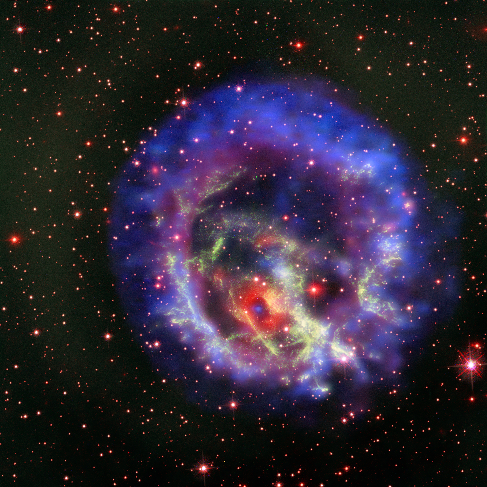

IMAGE: A Lonely Nuetron Star | IMAGE CREDIT: X-ray (NASA/CXC/ESO/F.Vogt et al); Optical (ESO/VLT/MUSE & NASA/STScI)
Dusty's Log Entry:
- Type: stellar remnant
- Temperature: about a million K at birth
- Mass: about 1.1 - 2.3 Suns
- Lifespan: billions of years
- What's Next: continuously cools and slows down
Neutron stars are formed when a massive star's core collapses during a supernova. When the core crushes, protons and electrons are forced to merge into neutrons. A teaspoon of this matter would weight billions of tons. The core spins faster and the magnetic field intensifies as the core shrinks. These neutron stars include pulsars, which beam radiation across space. There are thought to be around one billion neutron stars in the Milky Way.
Examples of neutron stars includes Crab Pulsar and the Vela Pulsar.